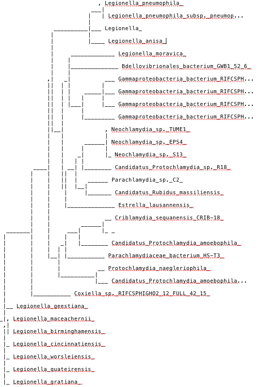
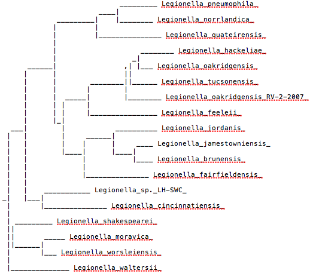
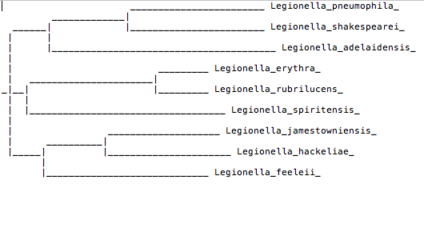

Quando realizamos análises bioinformáticas de sequências protéicas identificamos domínios como blocos de motivos estruturais ou de sequências que são recorrentes em proteínas estudadas.
Contudo, mesmo utilizando várias ferramentas bioinformáticas, houve proteínas cuja função é desconhecida. Assim, utilizamos a NCBI CDD (“conserved domain database”), esta permite-nos determinar o domínio destas proteínas sem função e consequentemente aumentar a precisão da previsão das funções destas.
Para isso, foi criado um script que procura na base de dados NCBI CDD os domínios das proteinas em estudo e, ao mesmo tempo, podemos aceder a mais informações sobre estas sem necessitar de outras ferramentas/bases de dados. A ferramenta não resolve todos os problemas relativos à anotação funcional de proteínas mas dá para observar, que dá uma ajuda valiosa.
def Entrezparsing():
owrite = open("cddGenes.txt","w")
owrite.write("CDD GENES \n")
for l in range(2542,2772):
owrite.write("lps"+str(l)+"---->")
try:
ofile = open("geneXML/lpg"+str(l)+".xml")
tree = ET.parse(ofile)
root = tree.getroot()
place = root.findall("./Entrezgene/Entrezgene_comments/Gene-commentary/Gene-commentary_comment/Gene-commentary/Gene-commentary_products/Gene-commentary/Gene-commentary_products/Gene-commentary/Gene-commentary_comment/Gene-commentary/Gene-commentary_comment/Gene-commentary/Gene-commentary_source/Other-source/Other-source_src/Dbtag/Dbtag_db")
dbID = root.findall("./Entrezgene/Entrezgene_comments/Gene-commentary/Gene-commentary_comment/Gene-commentary/Gene-commentary_products/Gene-commentary/Gene-commentary_products/Gene-commentary/Gene-commentary_comment/Gene-commentary/Gene-commentary_comment/Gene-commentary/Gene-commentary_source/Other-source/Other-source_src/Dbtag/Dbtag_tag/Object-id/Object-id_id")
lens = len(place)
for i in range(lens):
if place[i].text == "CDD":
owrite.write(dbID[i].text+",")
owrite.write("\n")
ofile.close()
except IOError:
owrite.write("\n")
def cddTest(user,idC):
Entrez.email = user
handle = Entrez.esummary(db="cdd",id=idC)
ofile = open("cdd_"+str(idC)+".html","w")
records = Entrez.parse(handle)
for record in records:
ofile.write("ID: "+record["Id"]+"\n")
ofile.write("Title: "+record["Title"]+"\n")
ofile.write("SubTitle: "+record["Subtitle"]+"\n")
ofile.write("Accession: "+record["Accession"]+"\n\n")
ofile.write("Abstract: "+record["Abstract"]+"\n")
ofile.close()
Código relativo à procura de ids para a base de dados CDD em relação a uma locusTag
"""
PROSITE
"""
def scanProsite(dic,tag):
handle = ScanProsite.scan(seq=dic[tag].seq,lowscore=1)
result = ScanProsite.read(handle)
for i in range(len(result)):
print(result[i])
def testProsite():
handle = ExPASy.get_prosite_entry('PS50943') #está como exemplo
ofile = open("test.html","wb")
ofile.write(handle.read())
ofile.close()
Procura com uma sequencia fasta de hits na base de dados prosite. Depois com os id's guardavamos o html respectivo do que foi encontrado neste caso PS50943.
Numa última fase de análise sobre os genes, destacam-se os que têm função indefinida e para tal, procede-se a uma análise filogenética entre este conjunto de genes com função desconhecida e um conjunto de genes com função bem definida através das análises anteriormente efectuadas. As árvores filogenéticas respetivas encontram-se representadas seguidamente, sendo que apenas se definiram de acordo com 3 genes de função desconhecida, escolhidos previamente, uma vez que eram em grande número na ordem dos 250 genes e todos eles, seguem o mesmo conceito definido anteriormente.
Árvore filogenética do blast relativo ao locusTag 2560
Árvore filogenética do blast relativo ao locusTag 2643
Árvore filogenética do blast relativo ao locusTag 2748
def prepFichClustalW(dic,tag):
genID = dic[tag].db_xref
lista = []
ofile = open("clustaLW"+tag+".fasta","w")
result_handle = open("blasts/"+genID+".xml")
blast_record = NCBIXML.read(result_handle)
E_VALUE_THRESH = 0.04 ##ThreshHold
for alignment in blast_record.alignments:
for hsp in alignment.hsps:
if hsp.expect < E_VALUE_THRESH:
s = re.split(r'>',alignment.title)[0]
if "hypothetical" not in s:
pass
else:
filo = s[s.find("[")+1:s.find("]")]
if filo not in lista:
lista.append(filo)
subject = filo.replace(' ','_')
ofile.write(">"+subject+":\n")
ofile.write(hsp.sbjct[0:])
ofile.write("\n\n")
ofile.close()